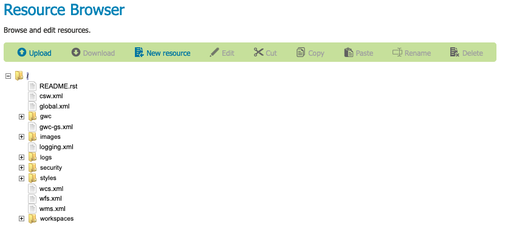
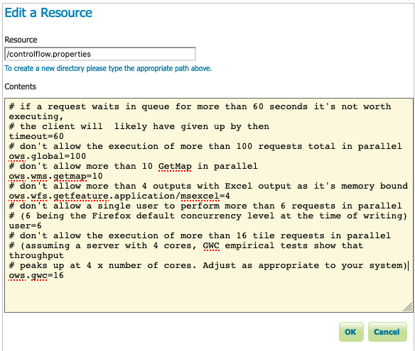

Resource Browser Examples¶
Uploading an icon to a styles folder¶
To upload a file to the global styles folder:
Creating a control-flow configuration file¶
Many extensions, such as Control flow module, are managed using a configuration file.
To create a controlflow.properties file:
Use Resource Browser to select the root folder in the resource tree.
This can be tricky as the label is not very long.
Resource Browser root folder¶
Click New resource buton to open Edit a Resource dialog.
Resource: controlflow.properties
Content: file contents
# if a request waits in queue for more than 60 seconds it's not worth # executing, the client will likely have given up by then timeout=60 # don't allow the execution of more than 100 requests total in parallel ows.global=100 # don't allow more than 10 GetMap in parallel ows.wms.getmap=10 # don't allow more than 4 outputs with Excel output as it's memory bound ows.wfs.getfeature.application/msexcel=4 # don't allow a single user to perform more than 6 requests in parallel # (6 being the Firefox default concurrency level at the time of writing) user=6 # don't allow the execution of more than 16 tile requests in parallel # (assuming a server with 4 cores, GWC empirical tests show that throughput # peaks up at 4 x number of cores. Adjust as appropriate to your system) ows.gwc=16
Press OK to create the resource.
Edit a Resoruce controlflow.properties¶
Previous: Resource Browser
Next: GeoServer data directory